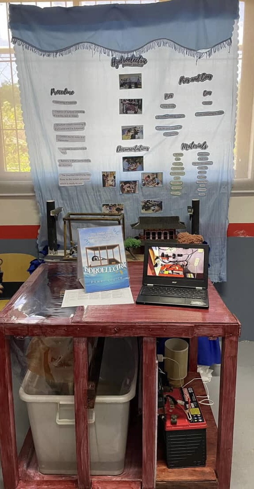

Hydroelectric Power Plant

Overview
This project demonstrates how a hydroelectric power plant generates clean and renewable electricity using the energy of flowing or stored water. The project addresses the need for sustainable energy sources that reduce dependence on fossil fuels and minimize environmental impact. My role was to assist in the planning, construction, and testing of the model, ensuring that the components worked properly. As a result, we successfully created a working prototype that demonstrated the basic process of converting water energy into electrical energy.
What I learned
Through this project, I gained a better understanding of renewable energy systems, hydroelectric power generation, and basic electrical circuits. I also developed skills in model construction, problem-solving, teamwork, and testing. Building the project improved my ability to apply engineering concepts while using tools and materials to create a functional prototype.
View live site / repo